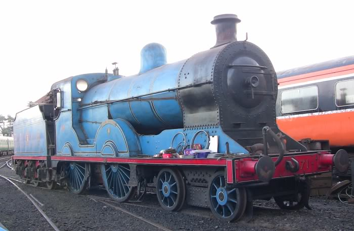

No.4 is a truly historic locomotive, the last steam locomotive to be used anywhere in Ireland outside of preservation.The most modern of Ireland's surviving steam engines, No.4 is also among the best travelled and best loved, after many years of service pulling Railway Preservation Society of Ireland's main line excursions.The real end of main line steam in the British Isles - on Northern Ireland Railways - went almost unnoticed by those outside the 'Emerald Isle'. That was in 1971. 11th August 1968 is a date burned in the memory of most enthusiasts, but far from being the end of UK steam, August 1968 marked only the retirement of BR's last tired survivors. How many people after this last sad day knew that, within the British Isles, LMS 2-6-4Ts were still working hard for their living, and would do for another two years?

This locomotive survived the break up of the Great Northern Railway in 1958, ending her days on secondary duties in 1963 after diesel railcars had taken over express services. After a period in the former Belfast Transport Museum in Witham Street, Belfast (now part of the UFTM collection), she was loaned to the RPSI and underwent extensive renovation in Harland & Wolff's shipyard in Belfast between 1977 and 1982. Since 1986, the RPSI has used her on tours all over Ireland, and she is one of only two surviving operational main line compound locomotives in the British Isles. As built, No.85 and her four sisters (all now scrapped) were unlined black, but the famous GNR(I) sky blue livery presently carried was applied from the mid 1930s.
The Railway Preservation Society of Ireland took delivery of a new resident to its Whitehead engineering base on the 31st May 2003. The resident in question was "Q" class 4-4-0 No.131.No.131 was built in February 1901 as part of a class of 13 4-4-0 express passenger locomotives for the Great Northern Railway (Ireland). They supplanted the various P and PP classes and were only displaced by the S class. The 4-4-0 tender locomotive was built by Neilson Reid in Glasgow. No.131 was designed under the auspices of Charles Clifford and although initially named, the name was removed in 1914. She was rebuilt with a superheated boiler, under George T. Glover (then Chief Locomotive Designer of the GNR(I)) in Dundalk works in 1920.
This engine has its origins in a proposed design for a large 0-6-0 for goods use on the Dublin and South Eastern Railway in the early 1920s. However, before any were built it was realised that the axle load would be too heavy for the DSER's track. This had actually happened before in 1903, when seven new 0-6-0s had been plagued by constant derailments due to excessive weight on the leading axles, and had to be retrospectively modified to become 2-6-0s.This time, fortunately, there was time to alter the design before the engines were constructed. The size of the boiler was reduced to lower the total weight, as well as adding a 'pony truck' in front to spread the weight over a greater number of wheels. This resulted in a 2-6-0 or 'Mogul' design.
No.186 and sister locomotive No.184 are examples of what was by far the most numerous class of locomotive (diesel or steam) ever to run in Ireland. 111 of the class were built between 1866 and 1903 with only minor modifications between batches. The great majority were built by the GS&WR at Inchicore, though the construction of some examples was contracted out to Beyer Peacock and Sharp Stewart, both famous Manchester based locomotive building firms. No.186 is a survivor of Sharp Stewart origin. The J15s survived long after many more modern locomotives were scrapped and when CIÉ abandoned steam haulage at the end of 1962 they were still the most numerous class with nearly half their number still in traffic. They were to be found all over the broad gauge lines of the Republic on all duties from shunting to main line passenger turns.

No.171 "Slieve Gullion" was built by Beyer Peacock in Manchester as one of five class S express passenger locomotives - one of a long series of 4-4-0 designs used by the Great Northern Railway (Ireland). They replaced the Q class as the GNR(I)'s most powerful passenger engines, a position they held until the introduction of V class compounds in 1932. The S class were all named after mountains. Slieve Gullion is a 1,880ft peak in County Armagh, overlooking the Great Northern main line betweeen Dundalk and Newry, and so it and its namesake were frequently seen together.The S class were originally painted green, but in 1923 received an austere black livery and lost their nameplates.In 1936 No.171 was, for a few months, fitted to burn oil, before reverting to coal firing that December.
Locomotive 175 was bought for the RPSI by a group of members as part of the strategy to create a mainline heritage diesel fleet. The locomotive was one of the last 141 Class locomotives to remain active in company service ending its days as Inchicore pilot. It was officially withdrawn on 24th February 2010 after its last foray on to the main line with 177 on 9th February on a permanent way train. It continued to be used as the Inchicore pilot until 24th July 2011 when it was stopped due to flat batteries. Purchased by funds raised by RPSI in 2012, it currently is in store in Inchicore.The 15-strong members of the (GL8) 121 class locos of 1961 were intended to solve the motive power crisis then existing on CIÉ. They soon proved to be reliable when not overloaded, problems with poor braking were resolved with later modifications based on experience with the 141 class. The main disadvantage with the 121s was the single end cab, meaning turning at terminal stations, with consequent time delays and maintenance of tables.
Locomotive B141 is the first of the double-ended locomotives produced by the Electro Motive Division of General Motors in 1962 and is of national and international importance. The locomotive was taken out of regular service in 2010, and ran its first preservation trip, to Longford, working in multiple with sister B142 in February 2010.The 15-strong members of the (GL8) 121 class locos of 1961 were intended to solve the motive power crisis then existing on CIÉ. They soon proved to be reliable when not overloaded, problems with poor braking were resolved with later modifications based on experience with the 141 class. The main disadvantage with the 121s was the single end cab, meaning turning at terminal stations, with consequent time and maintenance of tables. The issue of not being fitted with multiple working was resolved with the introduction of the 141s, the 121 locos were so fitted later in Inchicore.